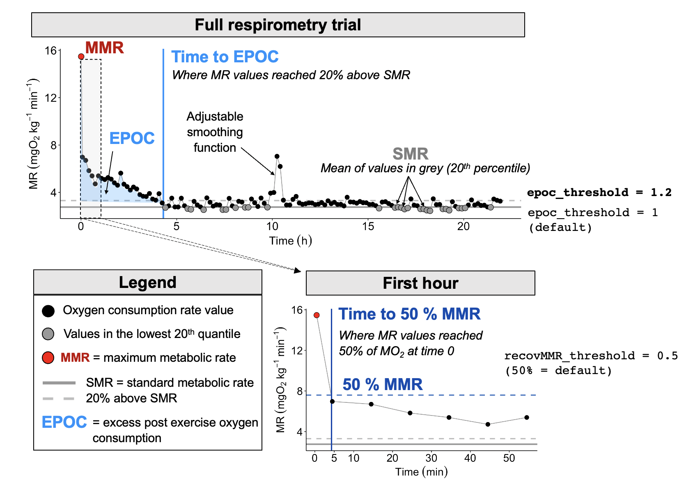

About Aquatic Respirometry
Source: AnalyzeResp_0/docs/SDA.rmd
Abbreviations / Vocabulary
Automatic measurements to obtain SMR and/or RMR In the figure below is an example O2 ~ time trend resulting from automatic metabolic rate measurements using intermittent flow respirometry. This may be used to enter the parameters in the SMR function correctly too, or to better relate to some data output files. Typically this measurement pattern is running overnight, producing several dozen of these cycles. The oxygen consumption rates a proxy of metabolic rates are recorded in animals that are undisturbed, not stressed, and is at post-absorptive state (common RMR and SMR assumption).
Abbreviations / Vocabulary
- MR: Metabolic rate
- MO2: oxygen consumption rate
- SMR: Standard metabolic rate, the minimim MR required to sustain life
- MMR: Maximum metabolic rate, the maximim MR that an animal can elicit
- EPOC: excess post exercise oxygen consumption, long term / full recovery
- Time[MMR50]: the time it takes to recover MO2 to 50% of the MMR
- SDA: specific dynamic action, digestion costs
- QC: quality control, manual checking and ensuring data quality, data cleaning to exclude technical or experimental anomolous recordings.
Relating data analysis to experimental work
Measuring maximum metabolic rates in 4 individuals
In this figure below…

Standard (and routine/resting) metabolic rates using automatic repeat measurement cycles

Standard (and routine/resting) metabolic rates using automatic repeat measurement cycles**Putting it together, metabolic performance using aquatic respiromtery

- Krista Kraskura (kkraskura@ucsb.edu) Web theme here